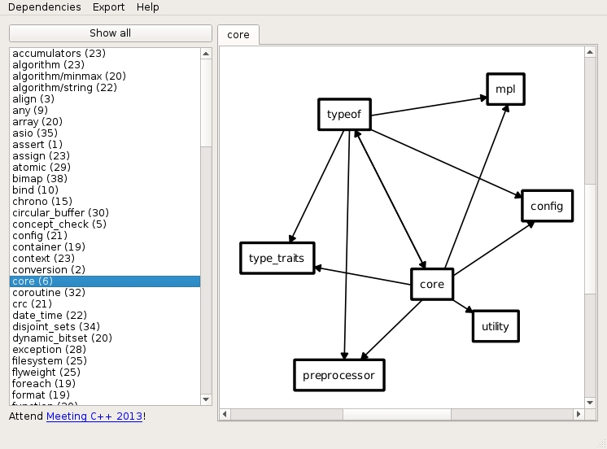

Boost dependency analyzer
Boost Dependency Analyzer
Boost dependency analyzer is a tool that analyzes and visualizes Boost library dependencies [1]. Unfortunately it has not been open sourced although available for download for free. There's Windows and Linux binaries available.
Let's run this tool on Debian wheezy. We will need some version of Boost sources, QT 5 libraries and Boost dependency analyzer itself.
Download latest Boost
By the time a wrote this document latest stable Boost version was 1.57.0. Download it from here http://sourceforge.net/projects/boost/files/boost/1.57.0/ and extract the archive.
Before continuing let's compile BCP tool. It will be used to detect the dependencies. In boost sources root directory run:
$ ./bootstrap.sh $ ./b2 tools/bcp
BCP will be compiled to something like $(boost_roo_dir)/bin.v2/tools/bcp/gcc-4.7/release/link-static. This is the directory where you'll locate BCP executable when running Boost dependency analyzer tool.
Download Boost deps analyzer
$ cd /tmp $ wget http://www.meetingcpp.com/tl_files/tools/boostdependencygui_linux.zip $ unzipt -e boostdependencygui_linux.zip $ cd boostdependencygui $ chmod +x boostdependencygui
Boost dependency analyzer comes with binary compiled for i386 architectures. Before running it we need to install dependency packages first which provide required libraries.
Prerequisites
Debian packages:
libqt5widgets5:i386
libqt5sql5:i386
To install i386 packages we must add i386 to the dpkg architecture list:
$ dpkg --add-architecture i386 $ sudo apt-get update
Now we can install i386 packages:
$ sudo apt-get install libqt5widgets5:i386 libqt5sql5:i386
Running the analyzer
Boost dependency analyzer comes with some compiled libraries. Unfortunately it fails to load them. Let's patch LD_LIBRARY_PATH:
$ export LD_LIBRARY_PATH=/tmp/boostdependencygui
Also those libraries have different names than the executable expects. Let's create symlinks to fix this:
$ ln -s libGraphLayout.so.1.0.0 libGraphLayout.so.1 $ ln -s libProcessSinkLib.so.1.0.0 libProcessSinkLib.so.1
Now we should be able to run the analyzer tool:
$ cd /tmp/boostdependencygui $ ./boostdependencygui
From GUI menu select Dependencies->Read dependencies, locate directory where you've extracted Boost libraries archive and press Open. Then locate where you've compiled BCP tool. After this analyzer should start processing, when it's done you can view the dependencies graph [2].
References
Comments